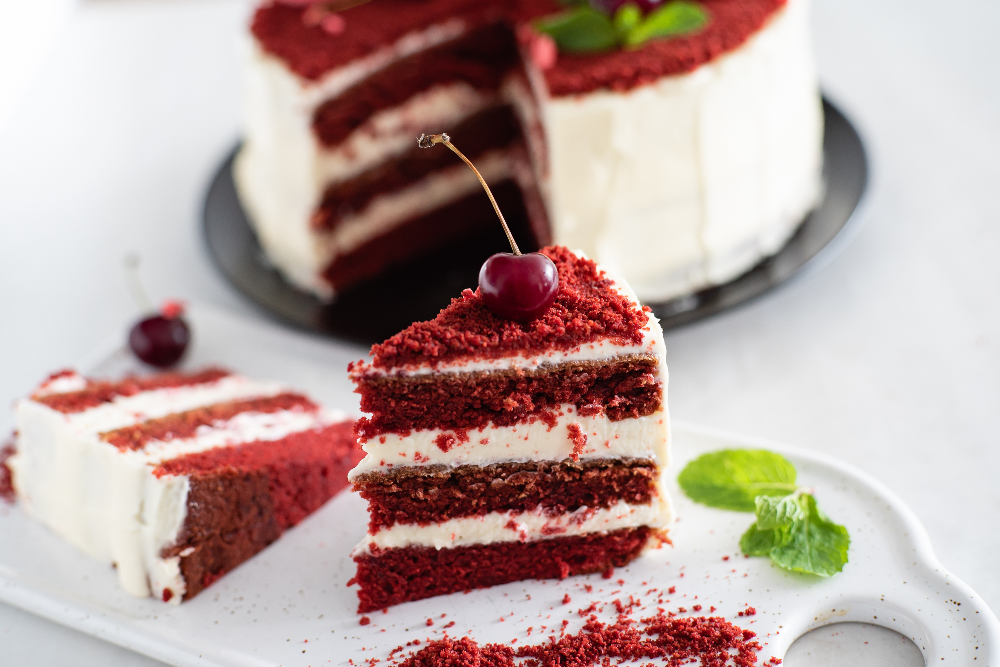

Strawberry Pie
- 1 sheet refrigerated pie crust
- 3/4 cup sugar
- 2 tablespoons cornstarch
- 1 cup water
- 1 package (3 ounces) strawberry gelatin
- 4 cups sliced fresh strawberries
- Whipped cream, optional
Ingredients
Directions
- Preheat oven to 450°. Unroll crust into a 9-in. pie plate. Trim edge. Line unpricked crust with a double thickness of heavy-duty foil or parchment. Bake 8 minutes. Remove foil; bake 5 minutes longer. Cool on a wire rack.
- In a small saucepan, combine the sugar, cornstarch and water until smooth. Bring to a boil; cook and stir until thickened, about 2 minutes. Remove from the heat; stir in gelatin until dissolved. Refrigerate until slightly cooled, 15-20 minutes.
- Meanwhile, arrange strawberries in the crust. Pour gelatin mixture over berries. Refrigerate until set. If desired, serve with whipped cream.

Red Velvet Cake
- Vegetable oil for the pans
- 2 1/2 cups all-purpose flour
- 1 1/2 cups sugar
- 1 teaspoon baking soda
- 1 teaspoon fine salt
- 1 teaspoon cocoa powder
- 1 1/2 cups vegetable oil
- 1 cup buttermilk, at room temperature
- 2 large eggs, at room temperature
- 2 tablespoons red food coloring (1 ounce)
- 1 teaspoon white distilled vinegar
- 1 teaspoon vanilla extract
- Cream Cheese Frosting, recipe follows
Ingredients
Directions
- Preheat the oven to 350 degrees F. Lightly oil and flour three 9 by 1 1/2-inch round cake pans
- In a large bowl, sift together the flour, sugar, baking soda, salt, and cocoa powder. In another large bowl, whisk together the oil, buttermilk, eggs, food coloring, vinegar, and vanilla.
- Using a standing mixer, mix the dry ingredients into the wet ingredients until just combined and a smooth batter is formed.
- Divide the cake batter evenly among the prepared cake pans. Place the pans in the oven evenly spaced apart. Bake, rotating the pans halfway through the cooking, until the cake pulls away from the side of the pans, and a toothpick inserted in the center of the cakes comes out clean, about 30 minutes.
- Remove the cakes from the oven and run a knife around the edges to loosen them from the sides of the pans. One at a time, invert the cakes onto a plate and then re-invert them onto a cooling rack, rounded-sides up. Let cool completely.

Chocolate-Chip Muffins
- 2 cups all-purpose flour
- ½ cup white sugar
- 3 teaspoons baking powder
- ½ teaspoon salt
- ¾ cup milk
- ⅓ cup vegetable oil
- 1 egg
- ¾ cup mini semi-sweet chocolate chips
- 3 tablespoons white sugar
- 2 tablespoons brown sugar
Ingredients
Directions
- Heat oven to 400 degrees F (205 degrees C). Grease bottoms only of 12 muffin cups or line with baking cups.
- In a medium bowl, combine flour, 1/2 cup sugar, baking powder, chocolate chips, and salt; mix well. In a small bowl, combine milk, oil and egg; blend well. Add dry ingredients all at once; stir just until dry ingredients are moistened (batter will be lumpy.)
- Fill cups 2/3 full. Sprinkle tops of muffins before baking with a combination of 3 tablespoons sugar and 2 tablespoon brown sugar.
- Bake for 20 to 25 minutes or until toothpick inserted in center comes out clean. Cool 1 minute before removing from pan. Serve warm.